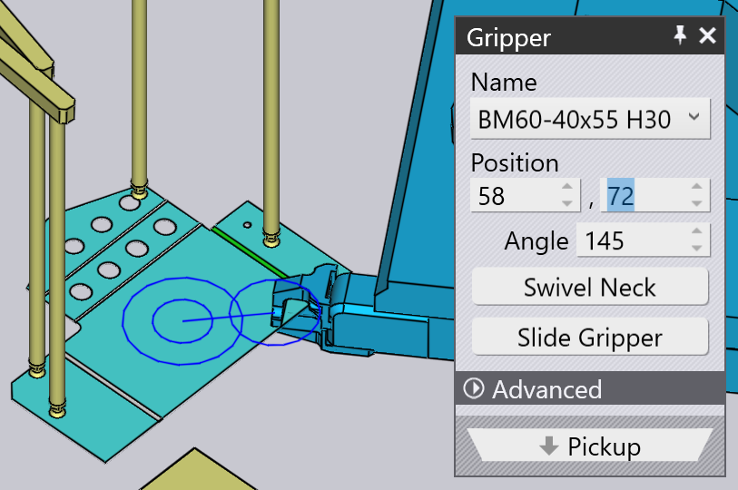

Felvétel adagolóból
A kisméretű alkatrészeket mechanikus megfogóval, más néven TecZone Bend pofás megfogóval mozgatjuk. Ha az alkatrész kisebb, mint körülbelül az A4-es méret, akkor a TecZone Bend automatikusan átvált a pofás megfogó használatára. Ez a megfogó csak az adagolóállomásról (más néven lemezteríték-adagoló) vehet fel alkatrészeket. Ezek a paraméterek befolyásolják a felvételi folyamatot:
-
Az adagoló helyzete és tájolása a gép cellájában.
-
Az alkatrész tájolása az adagolón.
-
A pofás megfogó pozíciója és tájolása az alkatrészen.
Az összes beállítás szerkesztésére szolgáló panelek az alábbiakban láthatók – ezeket logikai sorrendben felfelé/lefelé navigáló linkek kötik össze, amelyek más panelekhez vezetnek:

A fenti képen látható módon ezek a panelek a szimulációban található különböző objektumokra kattintva is könnyen elérhetők:
-
Az Adagoló panel megnyitásához kattintson a adagolóra.
-
Az adagoló alkatrészének tájolását a következőképpen szerkesztheti: kattintson az adagolón fekvő lemezterítékre (először állítsa a jelenlegi szakaszt a Felvétel állapotra, a navigátor P oszlopára kattintva).
-
A Megfogó alkatrészen való megtartási pozíciójának szerkesztéséhez kattintson a megfogóra.
Adagoló panel
Az Adagoló panel megnyitásához kattintson a adagolóra. TecZone Bend az alkatrészt az adagoló beállítási sarkába helyezi, majd a szívókorongos megfogókarokat az alkatrész sarkaihoz pozícionálja. Ezen a panelen szerkesztheti a karok konfigurációját és az adagoló helyét.

-
A Pozíció, Szög és a Emelés beállításokkal állítsa be az adagoló helyzetét és tájolását, hogy az megegyezzen a cellában elfoglalt tényleges helyzetével.
Szívási konfiguráció
A Szívás beállítás a szívókarok konfigurálásához szolgál. Ezek a beállítások csupán tájékoztató jellegűek és nem kritikusak, mivel nem kerülnek továbbításra a géphez az NC programban. A gép kezelőjének manuálisan kell beállítania a karokat (esetleg az NC programhoz mellékelt beállítási alapján).
-
Válasszon egy Kar és szerkessze a Szög és a Hossz beállításokat, hogy a kar forgassa és kijárassa a karokat, amíg a szívókorongok az alkatrészen nem helyezkednek el.
-
Az adagolóra szerelt szívókorongok cseréjéhez használja a Típus beállítást.
| Mivel a karok szögének és hosszának beállítása nem része a TecZone Bend által generált NC programnak, ezért a program nem ellenőrzi, hogy a karok nem keresztezik-e egymást. |
Felvétel panel
A Felvétel panel az alkatrész tájolásának beállítására szolgál az adagolón. Amikor elforgatja vagy megfordítja az alkatrészt, a TecZone Bend kiválasztja a megfelelő síkot, amelyen az alkatrészt meg fogja tartani (mivel a megfogó mindig csak egy irányból érkezhet). Ezt a panelt az adagolón lévő lemezterítékre kattintva hívhatja elő.

-
A Munkadarab manipulálása használatával elforgathatja az alkatrészt 90 fokkal. A fenti képen az alkatrész nem ideális helyzetben van ahhoz, hogy az adagoló sarkához viszonyítva referenciahelyzetbe lehessen állítani azt. Íme egy jobb eredmény, néhány forgatási műveletet követően:

-
Ha az adagolón lévő lemezterítékeket másképp tükrözzük, akkor a Munkadarab megfordítása gombbal megfordíthatjuk a modellt, hogy az megfelelő legyen:
 === Élek igazítása
=== Élek igazítása
Előfordulhat, hogy ezek a 90°-os elforgatások nem elegendőek. Tegyük fel, hogy a célélt (az alábbi ábrán látható) a Z referenciával szeretné igazítani az adagolón:

Kattintson a Szél beszabályozása és válassza a Beigazítás Z irányban menüpontot a megjelenő menüben. Ezután kattintson a célél közelében lévő részre. Ezáltal az él most egy vonalba kerül az adagoló referenciahelyzetével. Az eredmény az alábbiakban látható, below[1], miután a megfogó helyzetét és tájolását kissé módosítottuk, hogy jobban illeszkedjen ehhez az új beállításhoz):

Megfogó panel
A Megfogó panel a megfogó alkatrészen történő pozícionálására, más megfogóra történő átkapcsolásra, valamint a megfogó forgási és csúszási tengelyeinek konfigurálására szolgál, amikor a megfogó felszedi az alkatrészt.

-
A Név lista segítségével válasszon új megfogót a géphez rendelkezésre álló pofás megfogók listájából. A listában szereplő nevek között böngészve a megfogó miniatűr képe jelenik meg:

-
A Pozíció és a Szög beállításokkal pozícionálhatja és orientálhatja a megfogót megfogási sík középpontjához képest. Ezt a középpontot a fenti képen kettős körök jelzik. Itt ugyanaz a megfogó látható, mint a fenti képen, miután beállítottuk a helyzetét és a szögét:
 -
A Pofák elfordítása és a Eltolás gombokat a megfogó nyak- és kereszttartó-konfigurációjának módosítására használják. Az alábbiakban láthatók az eredmények, ha a fenti első konfigurációból indulunk ki és az alábbi műveleteket hajtjuk végre:

-
A Szívó megfogó alkalmazása gombbal az alkatrész szívó megfogó használatára vált. Ez gyakorlatilag az alkatrészegység teljes újraszámítását jelenti. Az adagoló többé nem használatos, ehelyett az alkatrészt a gép egy raklapról szedi fel. A hajlítási sorrend, az újrafogási műveletek és a lerakási minta mind újraszámításra kerültek, hogy jobban megfeleljenek egy szívó megfogónak.
A megfogási sík módosítása
A Fogófelület kiválaszta parancsot használjuk az alkatrész másik síkban történő megfogásához. Kattintsn erre a gombra, majd vigye az egeret arra a síkra, ahová a megfogót mozgatni szeretné. Ekkor a síkon egy kereszt jelenik meg, jelezve, hogy az kiválasztásra került:

A síkra kattintva a megfogó elmozdul a síkra, ahogy az az alábbi képen látható. A Megfogási sík ilyen változásai általában a hajlítási sorrendben is változtatásokat vonnak maguk után és szükségessé teszik az újrafogási műveletek módosításait stb.